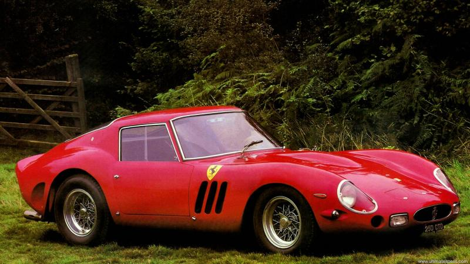
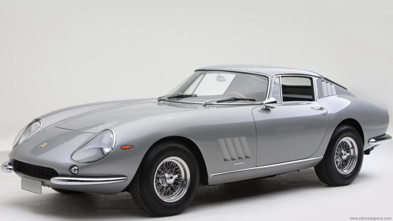
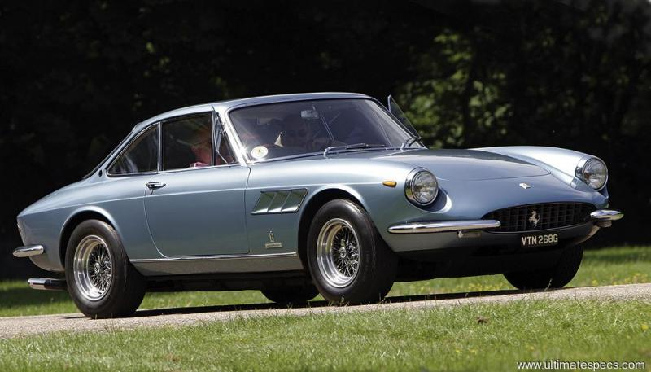
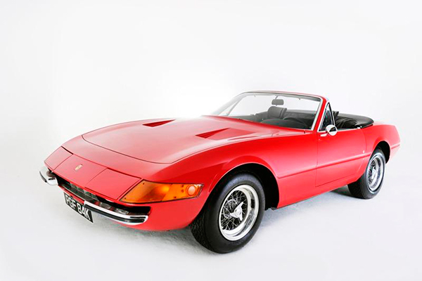
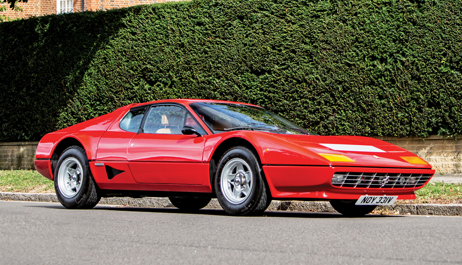

|  |
Ferrari 250 GT |
1954 |
240 cv |
A Ferrari 250 GT foi produzida entre 1954 e 1964 e marcou a transicao da Ferrari para o mercado de carros de rua de luxo. Utilizava um motor V12 de 3.0 litros, projetado por Gioachino Colombo. Teve diversas versoes, como Berlinetta, Cabriolet e Lusso, combinando desempenho com elegância. Ganhou destaque nas pistas com vitorias em corridas como Le Mans e Mille Miglia. É considerada uma das linhas mais iconicas e colecionaveis da Ferrari. |
|  |
Ferrari 275 GTB |
1964 |
280 cv |
A Ferrari 275 GTB foi lançada em 1964 como sucessora da 250 GT, combinando luxo e desempenho com um novo motor V12 de 3.3 litros. Foi o primeiro Ferrari de rua com suspensão traseira independente e opção de câmbio transaxle. Seu design marcante foi assinado pela Pininfarina, com carroceria feita pela Scaglietti. Teve versões em alumínio, com 2 ou 6 carburadores, incluindo a rara 275 GTB/4. É hoje um dos modelos classicos mais desejados e valiosos da marca. |
|  |
Ferrari 330 GT |
1967 |
450 cv |
A Ferrari 330 GT foi lançada em 1964, sucedendo a 250 GT, com um motor V12 de 4.0 litros mais potente. O modelo foi projetado para oferecer mais conforto e espaço, sendo uma opção mais "usável" para o dia a dia, sem perder a performance. Seu design foi criado por Pininfarina, com uma frente mais suave e elegante. A versão 330 GT 2+2 trouxe mais espaço interno, com dois assentos extras. Considerada uma das Ferrari mais refinadas de sua época, é muito apreciada por colecionadores. |
|  |
Ferrari Daytona |
1968 |
352 cv |
A Ferrari Daytona, oficialmente chamada 365 GTB/4, foi lançada em 1968 como sucessora da 275 GTB/4. Ela trazia um motor V12 de 4.4 litros na frente, com 352 cv, sendo uma das mais rápidas da época. Seu design afiado foi assinado por Pininfarina, com carroceria feita pela Scaglietti. Apesar da tendência aos motores traseiros nos esportivos, a Daytona manteve o clássico motor dianteiro. Ícone dos anos 70, ficou famosa por sua potência bruta, luxo e presença marcante. |
|  |
Ferrari 512 BB |
1976 |
360 cv |
A Ferrari 512 BB (Berlinetta Boxer) foi lançada em 1976 como sucessora da Daytona, adotando pela primeira vez um motor central-traseiro em um Ferrari de rua. Usava um motor 12 cilindros opostos (flat-12) de 5.0 litros, com 360 cv, inspirado nos carros de Fórmula 1. Seu design foi criado pela Pininfarina, com linhas baixas e agressivas típicas dos anos 70. A 512 BB trouxe avanços técnicos, como aerodinâmica aprimorada e refrigeração mais eficiente. É vista como a ponte entre as Ferrari clássicas e a era moderna. |
 |
Ferrari F40 |
1987 |
478 cv |
Lançada em 1987 para celebrar os 40 anos da Ferrari, a F40 foi o último modelo aprovado por Enzo Ferrari antes de sua morte. Tinha um motor V8 biturbo de 2.9 litros, com 478 cv, e era focada em leveza e desempenho extremo. Seu design radical, com asa traseira fixa e carroceria de fibra de carbono, marcava uma nova era nos supercarros. A F40 foi o carro de rua mais rápido da Ferrari na época, ultrapassando os 320 km/h. Até hoje, é considerada um dos maiores ícones da marca e símbolo dos anos 80. |
 |
Ferrari F50 |
1995 |
520 cv |
Lançada em 1995, a Ferrari F50 foi criada para comemorar os 50 anos da marca e é um supercarro com inspiração em tecnologia de F1. Equipado com um motor V12 de 4.7 litros, derivado do motor de corrida, com 520 cv, oferecia desempenho e som incomparáveis. Seu design, também da Pininfarina, era mais focado em aerodinâmica e funcionalidade, com uma estrutura de carbono e alumínio. A F50 foi uma das primeiras Ferrari a ter uma carroceria removível (targa). Apesar de ser mais civilizada que a F40, sua experiência de condução continua pura e visceral, como um carro de corrida para a rua. |